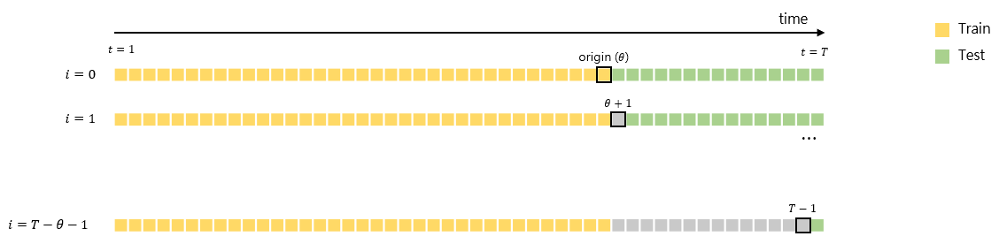
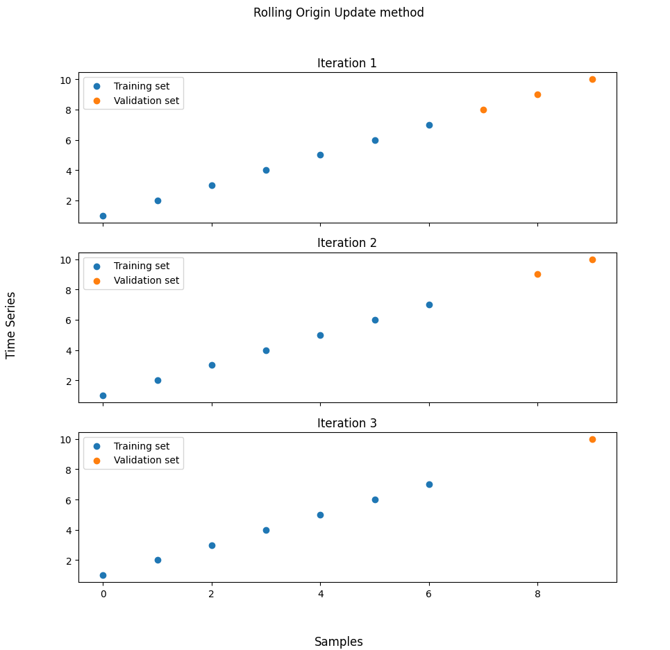

Rolling Origin Update method
timecave.validation_methods.OOS.RollingOriginUpdate(ts, fs=1, origin=0.7)
Bases: BaseSplitter
Implements the Rolling Origin Update method.
This class implements the Rolling Origin Update method. This method splits the data into a single training set and several validation sets. The validation sets are NOT disjoint, and, even though the model is validated several times, it only undergoes the training process once.
Parameters:
| Name | Type | Description | Default |
|---|---|---|---|
ts |
ndarray | Series
|
Univariate time series. |
required |
fs |
float | int
|
Sampling frequency (Hz). |
1
|
origin |
int | float
|
The point from which the data is split. If an integer is passed, it is interpreted as an index. If a float is passed instead, it is treated as the percentage of samples that should be used for training. |
0.7
|
Attributes:
| Name | Type | Description |
|---|---|---|
n_splits |
int
|
The number of splits. |
sampling_freq |
int | float
|
The series' sampling frequency (Hz). |
Methods:
| Name | Description |
|---|---|
split |
Split the time series into training and validation sets. |
info |
Provide additional information on the validation method. |
statistics |
Compute relevant statistics for both training and validation sets. |
plot |
Plot the partitioned time series. |
Raises:
| Type | Description |
|---|---|
TypeError
|
If |
ValueError
|
If |
ValueError
|
If |
Warning
The model should only be trained ONCE.
See also
Rolling Origin Recalibration: Similar to the Rolling Origin Update method, but the training set is updated along with the validation set.
Notes
The Rolling Origin Update method consists of splitting the data into a training set and a validation set, with the former preceding the latter. The model is only trained once. Then, at every iteration, a single data point (the one closest to the training set) is dropped from the validation set, and the model's performance is assessed using the new validation set. This process ends once the validation set consists of a single data point. The estimate of the true model error is the average validation error.

For more details on this method, the reader should refer to [1].
References
1
Leonard J Tashman. Out-of-sample tests of forecasting accuracy: an analysis and review. International journal of forecasting, 16(4):437–450, 2000.
Source code in timecave/validation_methods/OOS.py
info()
Provide some basic information on the training and validation sets.
This method displays the training set size and both the minimum and maximum validation set size.
Examples:
>>> import numpy as np
>>> from timecave.validation_methods.OOS import RollingOriginUpdate
>>> ts = np.ones(10);
>>> splitter = RollingOriginUpdate(ts);
>>> splitter.info();
Rolling Origin Update method
----------------------------
Time series size: 10 samples
Training set size (fixed parameter): 7 samples (70.0 %)
Maximum validation set size: 3 samples (30.0 %)
Minimum validation set size: 1 sample (10.0 %)
Source code in timecave/validation_methods/OOS.py
plot(height, width)
Plot the partitioned time series.
This method allows the user to plot the partitioned time series. The training and validation sets are plotted using different colours.
Parameters:
| Name | Type | Description | Default |
|---|---|---|---|
height |
int
|
The figure's height. |
required |
width |
int
|
The figure's width. |
required |
Examples:
>>> import numpy as np
>>> from timecave.validation_methods.OOS import RollingOriginUpdate
>>> ts = np.arange(1, 11);
>>> splitter = RollingOriginUpdate(ts);
>>> splitter.plot(10, 10);

Source code in timecave/validation_methods/OOS.py
split()
Split the time series into training and validation sets.
This method splits the series' indices into disjoint sets containing the training and validation indices.
At every iteration, an array of training indices and another one containing the validation indices are generated.
Note that this method is a generator. To access the indices, use the next() method or a for loop.
Yields:
| Type | Description |
|---|---|
ndarray
|
Array of training indices. |
ndarray
|
Array of validation indices. |
float
|
Used for compatibility reasons. Irrelevant for this method. |
Examples:
>>> import numpy as np
>>> from timecave.validation_methods.OOS import RollingOriginUpdate
>>> ts = np.ones(10);
>>> splitter = RollingOriginUpdate(ts);
>>> for ind, (train, val, _) in enumerate(splitter.split()):
...
... print(f"Iteration {ind+1}");
... print(f"Validation set indices: {val}");
... print(f"Validation set size: {val.shape[0]}");
Iteration 1
Validation set indices: [7 8 9]
Validation set size: 3
Iteration 2
Validation set indices: [8 9]
Validation set size: 2
Iteration 3
Validation set indices: [9]
Validation set size: 1
Source code in timecave/validation_methods/OOS.py
statistics()
Compute relevant statistics for both training and validation sets.
This method computes relevant time series features, such as mean, strength-of-trend, etc. for both the whole time series, the training set and the validation set. It can and should be used to ensure that the characteristics of both the training and validation sets are, statistically speaking, similar to those of the time series one wishes to forecast. If this is not the case, using the validation method will most likely lead to a poor assessment of the model's performance.
Returns:
| Type | Description |
|---|---|
DataFrame
|
Relevant features for the entire time series. |
DataFrame
|
Relevant features for the training set. |
DataFrame
|
Relevant features for the validation set. |
Raises:
| Type | Description |
|---|---|
ValueError
|
If the time series is composed of less than three samples. |
Examples:
>>> import numpy as np
>>> from timecave.validation_methods.OOS import RollingOriginUpdate
>>> ts = np.hstack((np.ones(5), np.zeros(5)));
>>> splitter = RollingOriginUpdate(ts);
>>> ts_stats, training_stats, validation_stats = splitter.statistics();
Frequency features are only meaningful if the correct sampling frequency is passed to the class.
Training and validation set features can only computed if each set is composed of two or more samples.
>>> ts_stats
Mean Median Min Max Variance P2P_amplitude Trend_slope Spectral_centroid Spectral_rolloff Spectral_entropy Strength_of_trend Mean_crossing_rate Median_crossing_rate
0 0.5 0.5 0.0 1.0 0.25 1.0 -0.151515 0.114058 0.5 0.38717 1.59099 0.111111 0.111111
>>> training_stats
Mean Median Min Max Variance P2P_amplitude Trend_slope Spectral_centroid Spectral_rolloff Spectral_entropy Strength_of_trend Mean_crossing_rate Median_crossing_rate
0 0.714286 1.0 0.0 1.0 0.204082 1.0 -0.178571 0.094706 0.428571 0.556506 1.212183 0.166667 0.166667
>>> validation_stats
Mean Median Min Max Variance P2P_amplitude Trend_slope Spectral_centroid Spectral_rolloff Spectral_entropy Strength_of_trend Mean_crossing_rate Median_crossing_rate
0 0.0 0.0 0.0 0.0 0.0 0.0 0.0 0 0.0 0.0 inf 0.0 0.0
0 0.0 0.0 0.0 0.0 0.0 0.0 0.0 0 0.0 0.0 inf 0.0 0.0
Source code in timecave/validation_methods/OOS.py
1025 1026 1027 1028 1029 1030 1031 1032 1033 1034 1035 1036 1037 1038 1039 1040 1041 1042 1043 1044 1045 1046 1047 1048 1049 1050 1051 1052 1053 1054 1055 1056 1057 1058 1059 1060 1061 1062 1063 1064 1065 1066 1067 1068 1069 1070 1071 1072 1073 1074 1075 1076 1077 1078 1079 1080 1081 1082 1083 1084 1085 1086 1087 1088 1089 1090 1091 1092 1093 1094 1095 1096 1097 1098 1099 1100 1101 1102 1103 1104 | |